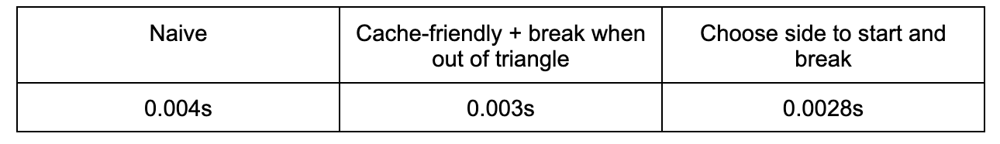

Overview
Give a high-level overview of what you implemented in this project. Think about what you've built as a whole. Share your thoughts on what interesting things you've learned from completing the project.
Section I: Rasterization
Part 1: Rasterizing single-color triangles
We will start with the unoptimized naive implementation.
Because computers save data in a pixel world, which is typically made of rows and columns, it is the most convenient for us to determine what the shape and size and location of the triangle we are attempting to rasterize is. We will start from the lowest pixel in the x-axis and the y-axis, to the highest, by determining the boundary with min(x0, x1, x2), max(y0, y1, y2) etc.
Also, because I want the center of the pixel instead of the bottom left, we will floor the point, and add 0.5 to it. Every iteration, we will move the pixel by one. In this process, we will determine whether the point we are rasterizing is in the triangle by using the line test formula in the class.
Because the class slide’s version assumes vertices are in clockwise direction, in our implementation, we want three line tests’ result to be greater than or equal to 0 OR less than or equal to 0 at the same time, in case vertices are in counterclockwise direction.
If the point is in the triangle, rasterize this point with the given color.
This is exactly equal to “one that checks each sample within the bounding box of the triangle”, because this is the way our naive implementation does.

|
In terms of the optimizations that we made, at first we tried to rearrange the for loops so that we will first go through the x-axis and then next y-axis. This is in order to achieve better cache temporal locality. And then, in looping the row, as long as it ever gets into the triangle and then gets out, there is no more need to continue in this row, so we break. This achieved in general ¾ time spent in one draw call. The C++ high resolution clock shows that the naive solution solves in 0.004s for basic test 5, but 0.003s spent for this optimization.
Another optimization we tried is to use the vertices with median x coordinate, draw a vertical line and find the intersection with the line between the remaining two vertices, getting the base length. Then respectively multiply it by abs(median x - two other x coordinates), getting the area (no need to divide it by 2 for performance purpose). We start from the left side if the left triangle’s area is smaller, or the right side if the right triangle is smaller. This can avoid the situation when, for example, a right triangle whose right vertex is on the right boundary, so that our first optimization may not work at all. This achieved a slightly better performance, from 0.003s improved to 0.0028s.
|

|
Part 2: Antialiasing triangles
Supersampling is useful because we want to get rid of the jigsaws resulting from low sample rate (pixel is always too low for continuous non-horizontal and non-vertical lines).
By sampling a pixel several times, we get the average color on that pixel. This will make that pixel not that “absolute”. Instead of either having the point or having no point, we can achieve a “having part of the point” effect. For example, if the point is black and the background is white, without supersampling, the pixel is either pure black or pure white, but supersampling may make it gray. From the macro view, lines may no longer be disconnected, and margins are more soft.
Our implementation is based primarily on the task 1’s, but instead of from floor(min(x0, x1, x2)) + 0.5, we do floor(min(x0, x1, x2)) + (1 / sqrt(sample_rate)) / 2, and the same for y. For instance, the sample_rate is 4, and we split the pixel into 4 subpixels, we are now at the bottom left subpixel’s center! Then we do another two for loops inside these big for loops, to go through the centers of the subpixels, and test if the subpixel is in the triangle. If so, we put the color inside the special sample_buffer. Our sample_buffer is managed so that, if the sample_rate is 4, the four subpixels of the bottom left pixel, takes the first 4 indices in the order from left to right, and then from bottom to up. Then the same order for the pixels. At the end, the resolve_to_framebuffer method will unpack the pixel into subpixels, and then take the average of them as the color for this pixel.

|
|
|
In lower supersampling rate, the tip of this triangle is too skinny for a pixel, so that the in-triangle test may simply fail. But higher supersampling rate allows testing more points in more equally distributed points in the pixel, and found that not all the points are outside of the triangle. Then it becomes a shallow pink. From the macro view, the triangle is now connected at 16 sample_rate, in contrast to the disconnected parts at 1 sample_rate.
We will start with the unoptimized naive implementation.
|
|
We implemented jittered sampling, which instead of sampling at the subpixel’s center—-what we did in grid-based sampling—-we sample at a random point in the subpixels. This achieves a result that the margins are more “coarse”, and is not that smooth compared to the grid-based result.
Part 3: Transforms
Section II: Sampling
Part 4: Barycentric coordinates
Part 5: "Pixel sampling" for texture mapping
Our solution to task 5 is based on task 2’s solution. After we tested that a point is inside the triangle, we calculate the point’s relative position inside this triangle using the barycentric formula. The relative distance from this point to the three vertices will be the weights for the three vertices’ results of the texture.
Now the resulting p_uv
is a Vertex2D with two points from 0 to 1. The nearest point sampling will round the two points to the nearest integrals. This will get the nearest texel in the texture.The bilinear sampling is more complex. We basically will sample the 4 surrounding texels, then use lerp and other techniques taught in the lecture to weight the results from these 4 texels according to their distances to the sampling point.
|
|
|
|
|
|
|
|
Both sampling techniques achieve smoother pixels at 16 sample_rate compared to their 1 sample_rate result. But the nearest sampling is too “sharp” at 1 sample_rate so that lines are seemingly disconnected. Bilinear sampling’s lines are way more smoother even at 1 sample_rate, as if supersampled. Even at 16 sample_rate, nearest sampling is still sharp compared to bilinear sampling, and shows more small jigsaws (though not very obvious since we supersampled).
When we have non-vertical and non-horizontal lines, or, more generally, when a point is smaller than a pixel can sample well, bilinear sampling will achieve better results since it is a weighted average of 4 surrounding pixels. Nearest sampling may simply ignore these texels, which may be useful, if they are not the nearest one.
Part 6: "Level sampling" with mipmaps for texture mapping
Section III: Art Competition
If you are not participating in the optional art competition, don't worry about this section!